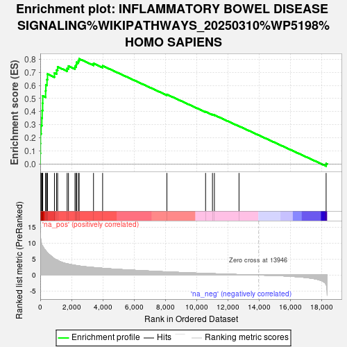
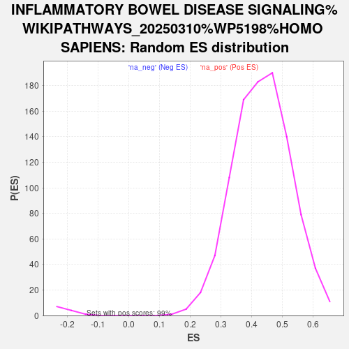

| | | Dataset | ranked_genes |
| Phenotype | NoPhenotypeAvailable |
| Upregulated in class | na_pos |
| GeneSet | INFLAMMATORY BOWEL DISEASE SIGNALING%WIKIPATHWAYS_20250310%WP5198%HOMO SAPIENS |
| Enrichment Score (ES) | 0.80279213 |
| Normalized Enrichment Score (NES) | 1.8491333 |
| Nominal p-value | 0.0 |
| FDR q-value | 0.0 |
| FWER p-Value | 0.0 |
Table: GSEA Results Summary

Fig 1: Enrichment plot: INFLAMMATORY BOWEL DISEASE SIGNALING%WIKIPATHWAYS_20250310%WP5198%HOMO SAPIENS
Profile of the Running ES Score & Positions of GeneSet Members on the Rank Ordered List
| SYMBOL | RANK IN GENE LIST | RANK METRIC SCORE | RUNNING ES | CORE ENRICHMENT | | 1 | TBX21 | 1 | 12.915 | 0.0809 | Yes |
| 2 | IL12RB1 | 10 | 12.141 | 0.1566 | Yes |
| 3 | IL18RAP | 15 | 11.920 | 0.2311 | Yes |
| 4 | TNF | 54 | 10.450 | 0.2945 | Yes |
| 5 | IL21R | 102 | 9.506 | 0.3515 | Yes |
| 6 | IL12RB2 | 122 | 9.266 | 0.4086 | Yes |
| 7 | HLA-DMA | 152 | 9.060 | 0.4638 | Yes |
| 8 | NOD2 | 159 | 8.992 | 0.5198 | Yes |
| 9 | STAT4 | 342 | 7.655 | 0.5578 | Yes |
| 10 | TLR2 | 358 | 7.574 | 0.6045 | Yes |
| 11 | IL2RG | 433 | 7.109 | 0.6450 | Yes |
| 12 | STAT1 | 464 | 6.893 | 0.6866 | Yes |
| 13 | IFNGR1 | 907 | 5.065 | 0.6942 | Yes |
| 14 | TGFB1 | 1044 | 4.728 | 0.7164 | Yes |
| 15 | TLR4 | 1113 | 4.576 | 0.7413 | Yes |
| 16 | STAT6 | 1718 | 3.537 | 0.7305 | Yes |
| 17 | IL4R | 1803 | 3.450 | 0.7475 | Yes |
| 18 | JUN | 2219 | 3.054 | 0.7440 | Yes |
| 19 | NFKB1 | 2299 | 2.986 | 0.7584 | Yes |
| 20 | NFATC1 | 2321 | 2.963 | 0.7758 | Yes |
| 21 | STAT3 | 2435 | 2.881 | 0.7877 | Yes |
| 22 | FOXP3 | 2487 | 2.849 | 0.8028 | Yes |
| 23 | SMAD2 | 3403 | 2.367 | 0.7676 | No |
| 24 | IL23A | 3986 | 2.125 | 0.7491 | No |
| 25 | RORA | 8094 | 0.997 | 0.5310 | No |
| 26 | TLR5 | 10565 | 0.511 | 0.3992 | No |
| 27 | MAF | 11005 | 0.439 | 0.3780 | No |
| 28 | IL18 | 11128 | 0.419 | 0.3739 | No |
| 29 | GATA3 | 12701 | 0.161 | 0.2891 | No |
| 30 | RORC | 18267 | -2.946 | 0.0034 | No |
Table: GSEA details [plain text format]

Fig 2: INFLAMMATORY BOWEL DISEASE SIGNALING%WIKIPATHWAYS_20250310%WP5198%HOMO SAPIENS: Random ES distribution
Gene set null distribution of ES for INFLAMMATORY BOWEL DISEASE SIGNALING%WIKIPATHWAYS_20250310%WP5198%HOMO SAPIENS